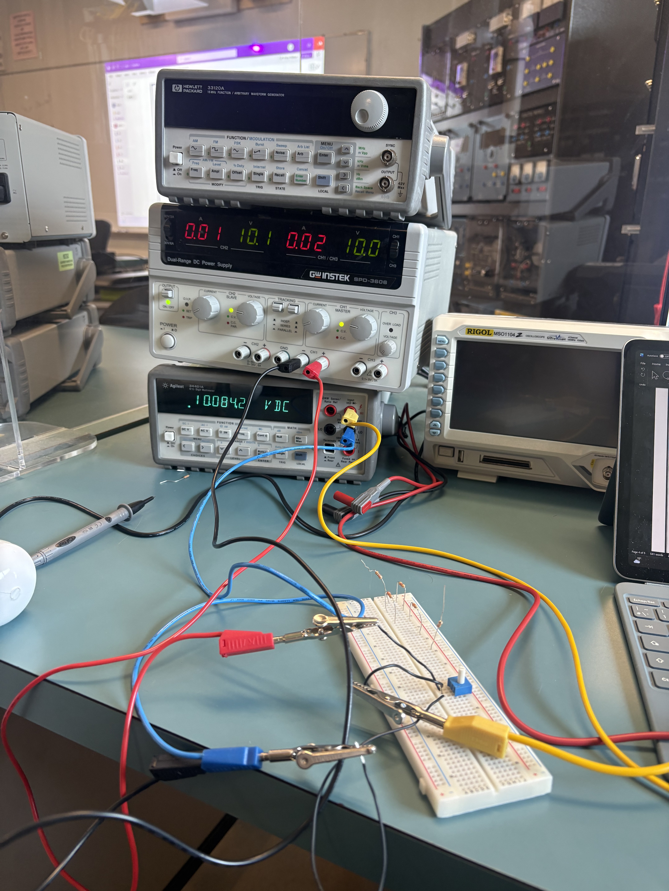
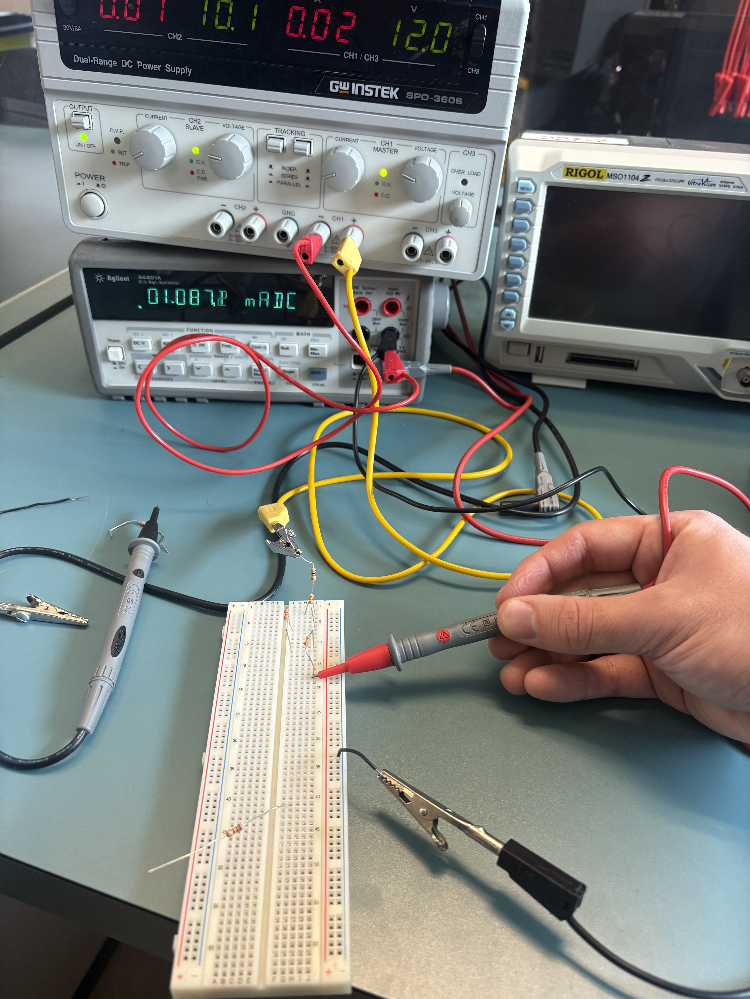

Guided mode: choose a target and meter function. Changing functions turns the output off and physically rearranges the leads. Inspect the connection card, then enable the supply for V or A.
Voltage: red in HI VΩ and black in LO; probes go across the target. The circuit stays intact.
Resistance: output off, supply leads disconnected. An individual resistor has a lead lifted to remove parallel paths. Network targets measure equivalent resistance. The Lab 5 Rth exercise also shorts the disconnected circuit input.
Current: red moves to the I input. The circuit opens at the selected branch and the meter closes that gap in series. Its reading is solved from that changed network.
Manual mode: guided changes are removed; output stays off. Wire a break using separate breadboard rows, place the probes, select the correct jack and then enable output. A meter across the supply is blocked.
Breadboard: A–E share each numbered row; F–J form a separate group. Four power rails are split between rows 31 and 32. Bridge rail halves when needed. Use Breadboard view for precision.
Build: select Wire or Resistor and click two holes. A pot uses the first hole and the same letter at rows +4 and +8. Click a resistor in Inspect to edit it. Turn output off before editing. All changes can be undone.
The scope and generator are visual references for Lab 1 orientation. AC operation, meter accuracy, resistor tolerance and thermal effects are not simulated.
GW Instek SPD-3606 supply · Agilent 34401A DMM · HP 33120A generator · Rigol MSO1104Z scope.

